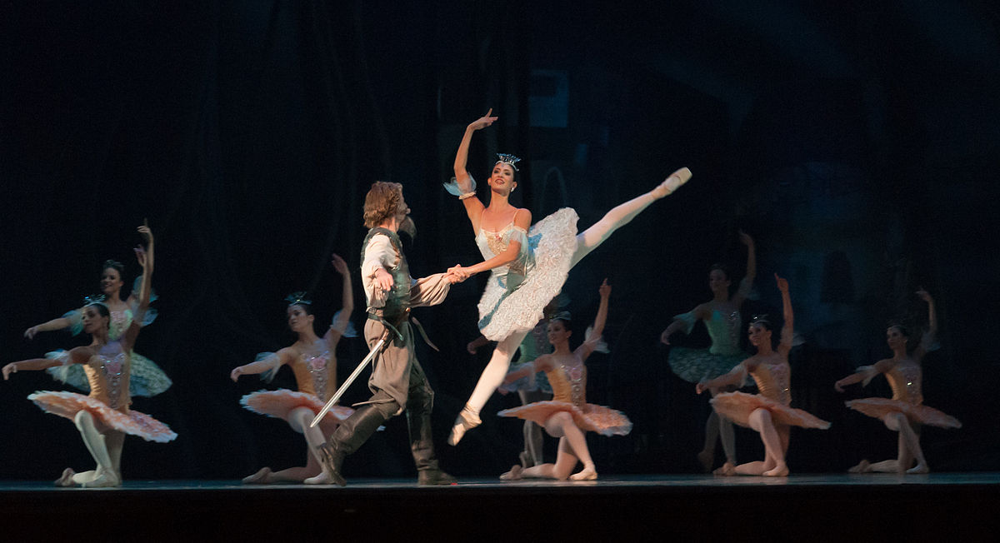
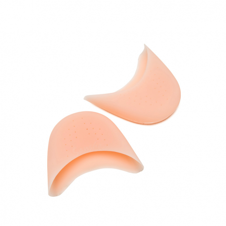
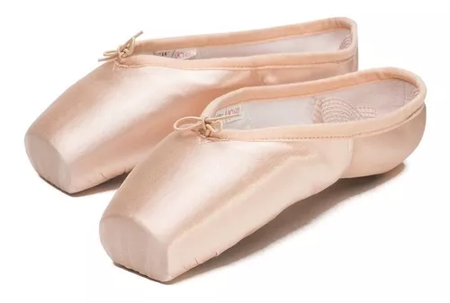

La danza clásica se originó a partir del balletto italiano en el siglo XV. Luis XIV desempeñó un papel importante en el reconocimiento de la danza clásica como un arte. Francia y Rusia son los países en los que el ballet ha tenido ayor auge con sus bailarines y coreógrafos, como Petipa o Serge de Diaghilev. La danza clásica es una forma de baile que basan sus movimientos delicados en el control completo del cuerpo a la interpretación de la música orquestal que suene, contando así una historia, pero no cualquier tipo de historia sino, la historia.
Ahora te voy a enseñar como usar las puntas de una manera correcta
 Algunas cosas que puede llegar a amejorar uno mismo es merorar la coordianacion, el equilibrio, la agilidad de movimientos.
Ahi en el link podemos ver una pagina en donde venden mayas y demas.
4 tips que te ayudarán a mantener tus Puntas por más tiempo:
1.- Mantén tus Puntas secas Cuando acabes de usarlas, sigue estos pasos:1.1- Dóblalas correctamente. Dobla la parte del talón hacia el interior de la suela y los laterales hacia dentro. Ponlas una enfrente de la otra de manera que el talón de una esté en la punta de la otra y enróllalas con las cintas de sujeción que que has cosido antes de usarlas (si no tienes claro cómo coserlas o quieres ir sobre seguro, en este post te lo explico detalladamente paso por paso)
1.2- Guárdalas en una bolsa traspirable de tela o de rejilla (como esta de Bloch, perfecta y económica). Evita bolsas de plástico que mantienen la humedad y reblandecerán tus Puntas. No las dejes sueltas dentro de tu bolso de danza, pueden deformarse y estropearse.
1.3- Cuando llegues a tu casa, sácalas de la bolsa y ponlas en un lugar seco y fresco para que se sequen bien (generalmente tardan unas 48 horas en estar completamente secas).
Un truquito que puede resultarte útil es ponerles en el interior algo de papel de periódico (que es muy secante) o unas bolsitas de infusión (que absorben muchísimo la humedad).
2.- Refuerzo de la plataforma
· Cuando vayas a comprar tus Puntas de Ballet, observarás que hay algún modelo que tiene un protector en la plataforma o base externa de la zapatilla (como es el caso de la S0139L Triomphe de Bloch). Es una pieza de serraje que a la vez que la protege del desgaste rápido, también favorece una mejor adherencia al bailar sobre una superfície que resbale.
· Si el modelo que escoges no lleva este protector, también puedes adquirirlo por separado (protectores de plataforma para Puntas de Ballet) y encolarlo directamente en la plataforma (pero ten en cuenta que la cola ha de ser especial para estas superficies y no vale cualquier tipo).
· Pero también hay quien prefiere hacerlo a la manera tradicional y zurcir la plataforma con un hilo grueso de algodón o nylon (en muchos casos incluso habiendo recortado primeramente el satín de la plataforma). Esta es una opción más costosa y arriesgada si no lo has hecho antes. Es mejor esperar a saber bien qué necesitas antes de lanzarte a hacer este tipo de rectificaciones tan específicas. Pero de todas maneras, para que sepas que esta opción existe y veas cómo se lleva a cabo, más abajo te dejo un video explicativo a cargo de una bailarina.
Si es la primera vez que lo haces, te recomiendo que consultes con tu profesor-a antes de hacer un estropicio. Estas modificaciones tan personalizadas de la zapatilla has irás haciendo (o no) a medida que entiendas bien qué necesitas.
3.- Reforzar la "Caja"
Si aún no sabes qué es la "Caja" de la Punta, puedes verlo en este post en el que analizo las partes de una Punta de Ballet
Cuando la Caja se reblandece, tienes la opción de usar un endurecedor especial: un pegamento líquido que viertes dentro, lo decantas haciendo que se distribuya bien por toda la Caja y lo dejas secar. Una vez seco, verás que esta parte ha ganado un poco de dureza.
Hay también quien utiliza lacas u otros métodos más caseros, pero te recomiendo que hagas los mínimos inventos posibles ya que la Punta no es un juguete y si no está en buen estado puedes sufrir serias lesiones.
Por otro lado, el refuerzo de la Caja has de saber que es una opción de emergencia y que te ayudará en un momento dado, pero no es una práctica que vaya de renovar tus Puntas. En este caso, ya es momento de ir pensando en comprar Puntas de Ballet nuevas.